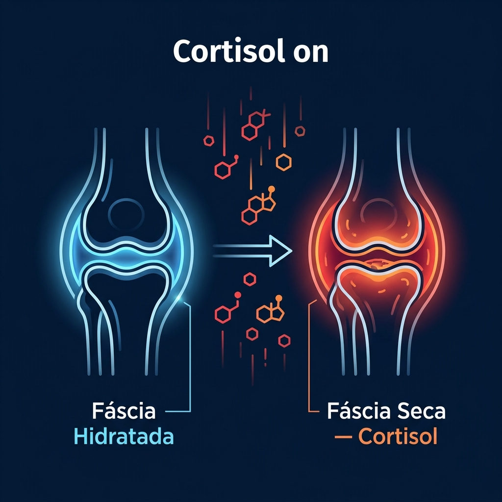
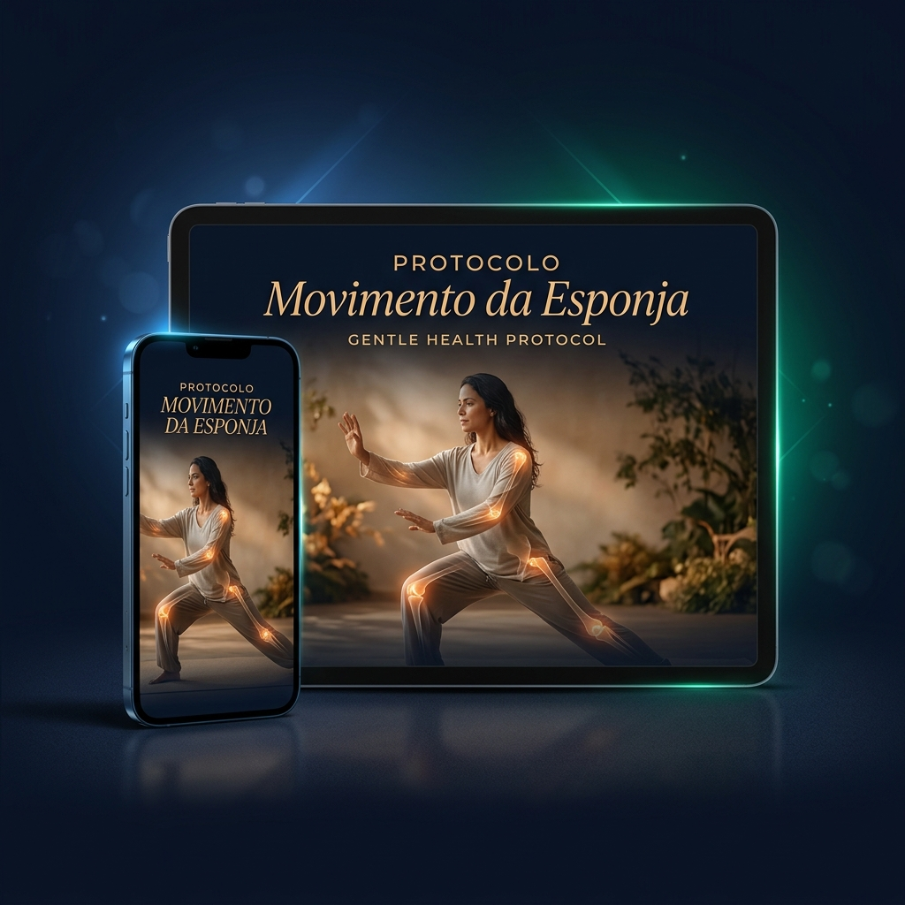

...Sem precisar pisar em uma academia, sem suar e sem depender de remédios que destroem o seu estômago.
💳 SIM! QUERO DESTRAVAR MEU CORPO AGORA (R$ 19,90)Olá! Se você chegou até aqui, eu sei exatamente o que você está sentindo.
Você acorda parecendo que levou uma surra durante a noite. A lombar queima, os joelhos estalam, e você precisa de alguns minutos sentada na beira da cama apenas para tomar coragem de ficar em pé.
Durante o dia, você é o pilar da sua casa. Resolve os problemas dos filhos, do marido, do trabalho. Você cuida de todos... mas no fim do dia, quem cuida de você?
Quando a casa finalmente silencia e você deita a cabeça no travesseiro, o seu corpo clama por descanso, mas a sua mente liga no 220v. A ansiedade bate, o coração acelera e o "apagão" não vem.
🔬 A culpa NÃO é sua. E eu posso provar — com base no que o seu diagnóstico acabou de revelar sobre o estado atual do seu sistema nervoso.
Anos engolindo o estresse e se sacrificando pelos outros colocaram o seu sistema nervoso em estado de "Alerta Máximo". Isso faz o seu corpo despejar Cortisol no seu sangue 24 horas por dia.
Esse cortisol age como um secador de cabelo apontado para as suas articulações. Ele evapora o líquido natural das suas juntas e resseca a sua Fáscia (a pele que envolve seus músculos). Seus ossos começam a raspar.

Comparativo de lubrificação articular e qualidade do sono — baseado em dados reais de usuárias

Extraímos a essência terapêutica do Tai Chi — a arte milenar que mantém mestres orientais com articulações jovens aos 80 anos — e criamos um passo a passo em vídeo de apenas 15 minutos, focado 100% em mulheres maduras.
Veja o que aconteceu depois de alguns dias com o protocolo:
De R$ 97,00
R$ 19,90
Pagamento único · Sem mensalidades · Acesso imediato
15 minutos. Sem sair de casa. Sem academia. Sem remédios.
O Fluxo do Tai Chi que pode mudar tudo começa por apenas R$ 19,90.